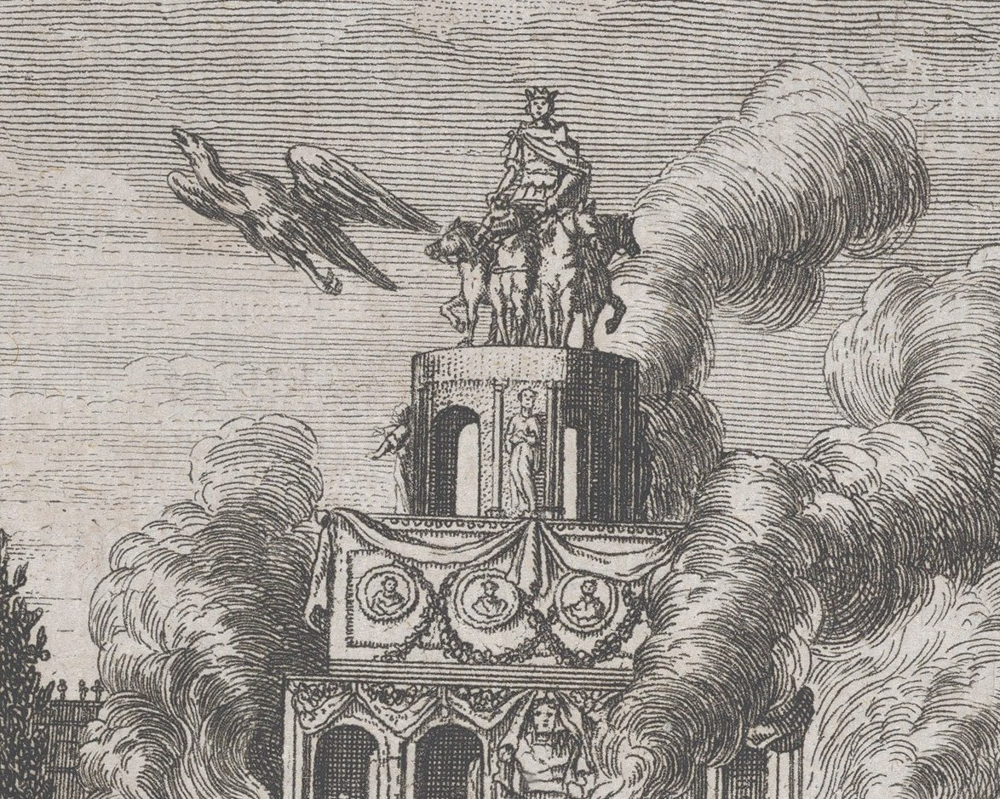
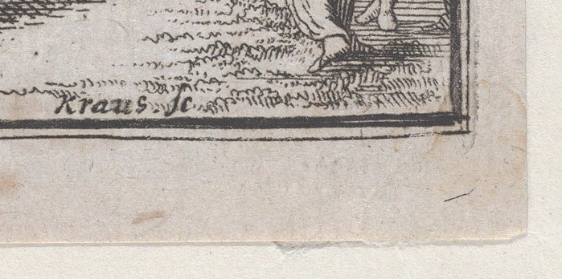
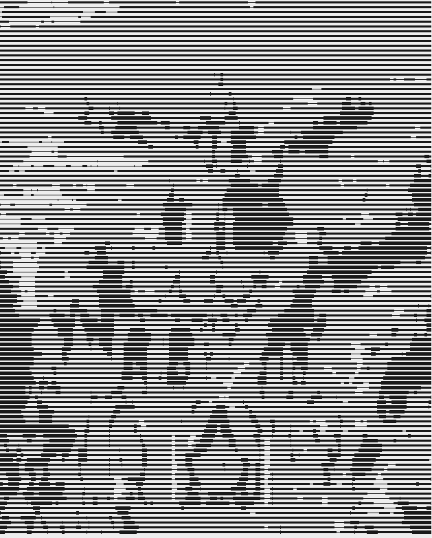

A Celebration
The Met calls this etching by Johann Ulrich Kraus (German, 1655–1719) "A Celebration". A crowd stands before a tall tiered structure hung with garlands and medallion portraits, and smoke pours from it. At the top a crowned figure drives a team of four horses. An eagle flies away from the top, to the left.

I read it as the cremation of a Roman emperor, with the release of the eagle. Herodian (as quoted in a source I found by search, not checked in the text) says that after the pyre is lit "an eagle is released from the highest story" and carries the emperor's soul to heaven. The tiers, the garlands, the smoke and the bird fit that. The crown, the chariot and the crowd in antique dress also fit. I did not identify the book. The plate is marked "ad pag. 269" at top right, so it was made for a text, and the Met record gives no title. The title "A Celebration" is the museum's, and probably a stopgap.

Correction at full size (2795×3478): from the small image I read the signature as "Kraus fe". It reads "Kraus sc." (sculpsit, engraved it). Both are plausible; I would have been wrong.
Unchecked: which book, which emperor, whether "ad pag. 269" is a Herodian edition at all.
Made from it
Kraus's sky is ruled: hundreds of parallel horizontal lines, thicker where the sky is darker. I redrew the middle of the print the same way, one ruled line every seven pixels, line weight set by the darkness underneath, nothing else. The smoke and the tower come out as swellings in the lines. It is a crude copy of a method, not of the plate.

← index